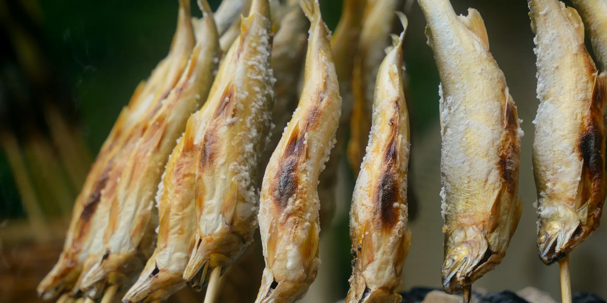

お食事Cuisine
献立囲炉裏で焼く、山の会席


ご夕食は囲炉裏のあるお食事処で、季節の会席をお一品ずつ。囲炉裏でじっくり焼き上げる川魚は、宿いちばんの名物です。ご朝食は渓谷を望む大広間で、朴葉味噌と炊きたてのご飯をどうぞ。
お食事の時間と場所
| ご夕食 | 18:00〜 ／ 18:30〜（お食事処「囲炉裏の間」） |
|---|---|
| ご朝食 | 7:30〜 ／ 8:00〜（大広間） |
| 名物 | 川魚の炭火焼き、飛騨牛の朴葉味噌焼き、山菜の天ぷら |
| お飲み物 | 飛騨の地酒 6種、地ビール、ワインなど |
食物アレルギーをお持ちのお客さまへ
ご到着の7日前までにお知らせいただければ、料理長と相談のうえ、できる限り代わりのお料理をご用意します。
当日のお申し出による献立の変更は承っておりません。内容によっては、お食事のご用意が難しい場合がございます。
食物アレルギーをお持ちのお客さまは、ご到着の7日前までにお電話でお知らせください。特定原材料（えび・かに・小麦・そば・卵・乳・落花生）を中心に、料理長が可能な範囲で代わりのお料理をご用意します。
同じ厨房で調理しているため、ごく微量が混ざる可能性がございます。重いアレルギーをお持ちの場合は、事前に詳しくご相談ください。
お問い合わせ 0000-00-0000（8:00〜21:00）